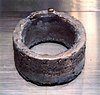

plutonium

Definition: Plutonium is a radioactive chemical element with the symbol Pu and atomic number 94. It is an actinide metal of silvery-gray appearance that tarnishes when exposed to air, and forms a dull coating when oxidized. The element normally exhibits six allotropes and four oxidation states. It reacts with carbon, halogens, nitrogen, silicon, and hydrogen. When exposed to moist air, it forms oxides and hydrides that can expand the sample up to 70% in volume, which in turn flake off as a powder that is pyrophoric. It is radioactive and can accumulate in bones, which makes the handling of plutonium dangerous.
Source: Wikipedia
Wikipedia Page
Wikidata Page